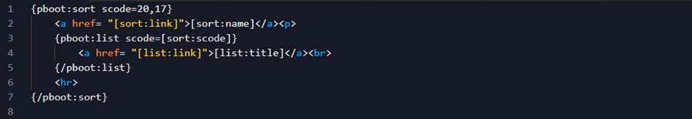
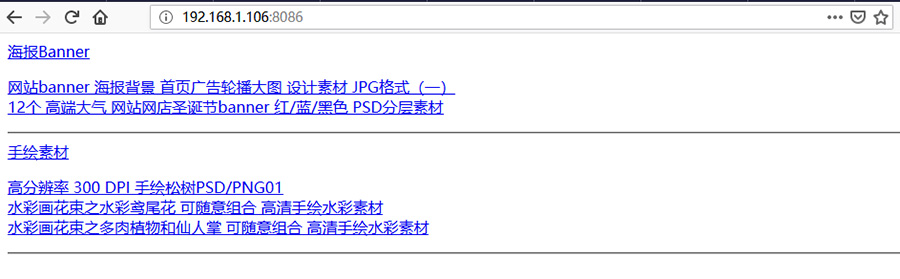
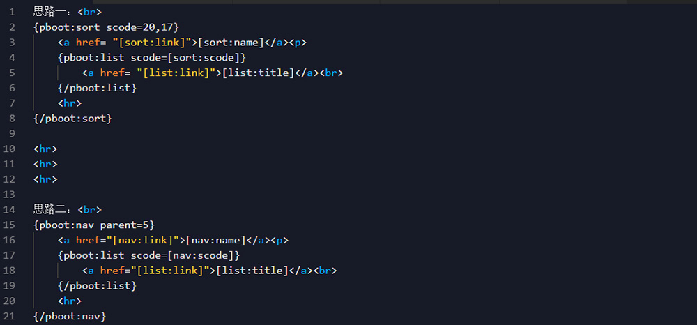
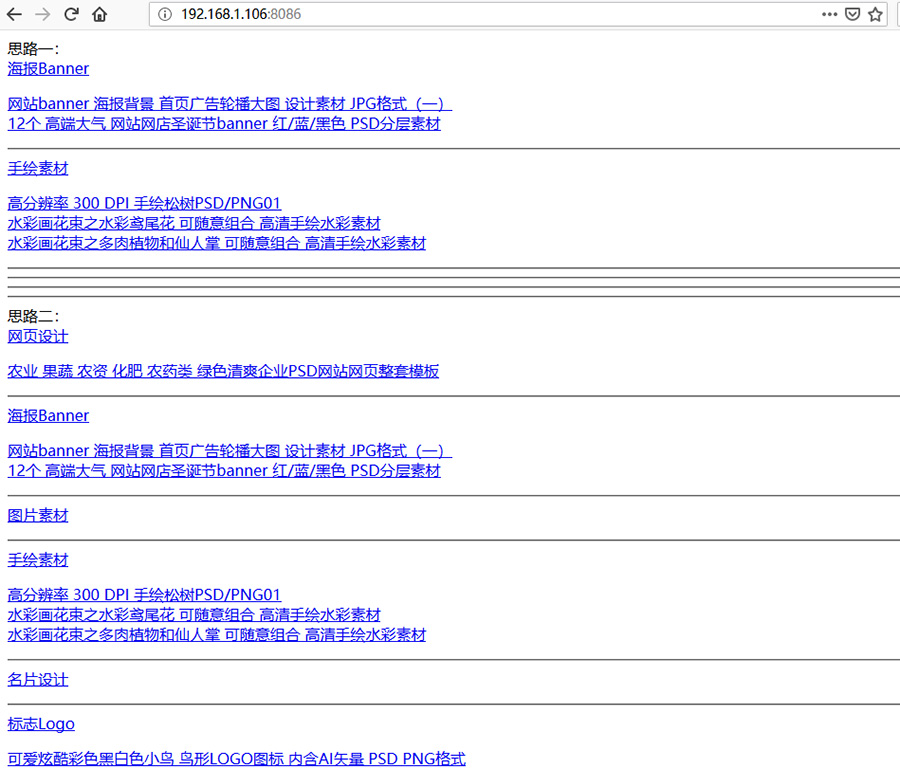

在正式制作模板之前，还需要了解并灵活熟练地使用模板标签。
一个模板中，除去结构（HTML）、样式（CSS）、交互（JS）后就是内容（数据）了，而数据就是通过模板标签，把你在网站后台提交的内容调用出来，展示在前端模板页面。通过不同的结构、样式、交互和内容的组合，就能制作出不同的模板。
一、阅读官方开发手册
PbootCMS提供了在线官方开发手册（阅读地址），制作模板的时候可以随时参考手册的内容。
二、灵活使用模板标签
开发手册提供的是最基础的模板标签，但是实际制作模板过程中，会遇到一些手册中没有的需求。毕竟，手册不可能把每个需求的代码都直接给你写好，这时候就需要在模板标签的基础上进行灵活运用了。
例：需求分别调用某一栏目下，所有子栏目的内容列表。
思路一：
先使用 指定栏目标签 调用指定子栏目标题：
{pboot:sort scode=*}
<a href="[sort:link]">[sort:name]</a>
{/pboot:sort}再使用 指定栏目内容列表 的标签来调用子栏目内容：
{pboot:list scode=*}
<a href="[list:link]">[list:title]</a>
{/pboot:list}结合使用：
{pboot:sort scode=1,2,3}
<a href="[sort:link]">[sort:name]</a>
{pboot:list scode=[sort:scode]}
<a href="[list:link]">[list:title]</a>
{/pboot:list}
{/pboot:sort}我们只需要指定 scode=子栏目的id 即可。有几个子栏目，scode就写几个id。因为标签支持多个栏目，如：1,2,3。
代码实例：

显示结果：

可以看到，子栏目标题和内容列表已经完成了。
不过，这样就需要解决另外一个问题：如果后台新增了子栏目，或者删除了子栏目，怎么办？
当然，你可以到模板文件的 scode 中继续添加新增的id，或者删除id。每次后台新增或者删除子栏目，模板文件就要改一遍。
为了更好解决这个问题，就需要灵活使用模板标签了。
思路二：
我们可以通过 导航菜单列表标签 先调用子栏目
{pboot:nav parent=*}
<a href="[nav:link]">[nav:name]</a>
{/pboot:nav}再使用 指定栏目内容列表 标签。
{pboot:list scode=[nav:scode]}
<a href="[list:link]">[list:title]</a>
{/pboot:list}结合使用：
{pboot:nav parent=*}
<a href="[nav:link]">[nav:name]</a>
{pboot:list scode=[nav:scode]}
<a href="[list:link]">[list:title]</a>
{/pboot:list}
{/pboot:nav}代码实例：

显示结果：

可以看到，思路一只能显示指定的子栏目，思路二则显示该栏目下所有子栏目，并且新增或者删除子栏目的时候，列表也跟随着自动增加或者减少。
总结：模板标签是死的，写代码的人是活的，要灵活运用模板标签。
文章来源：https://www.timoo.net/content/73.html